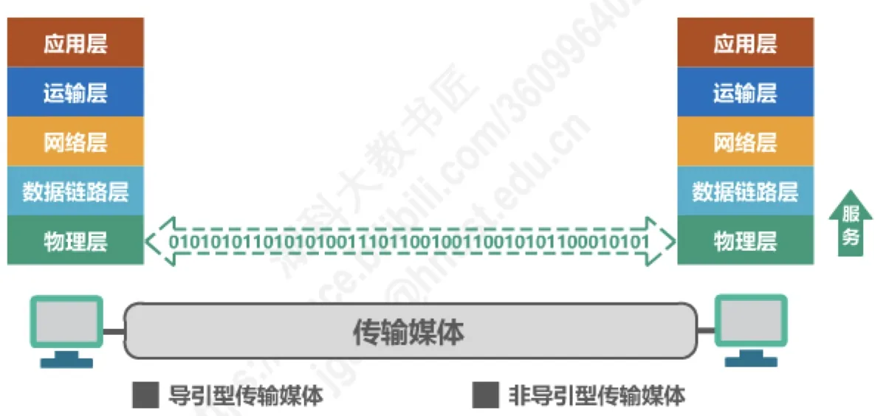

计算机通信与网络 · 第 2 章 物理层
2.1 物理层的基本概念
从这一节起我们正式进入分层结构的最底层 —— 物理层。它要解决的问题最朴素：怎样在连接各种计算机的传输媒体上传输数据比特流。本节先说明物理层的地位和它替上层「屏蔽」了什么，再看传输媒体的两大类，最后给出物理层协议必须规定的四个特性。
1. 物理层要解决什么问题
物理层考虑的是怎样才能在连接各种计算机的传输媒体上传输数据比特流。它不关心比特流代表什么含义、属于哪个进程、要送到哪个网络，只关心怎样把一串 0 和 1 可靠地送到线路的另一端。
这里的关键词是「各种传输媒体」。现实中的传输媒体五花八门：双绞线、同轴电缆、光纤、无线电波……它们的物理性质、信号形式、接口形状各不相同。如果让上层去一一应付这些差异，整个体系结构就没法设计了。因此：
物理层为数据链路层屏蔽了各种传输媒体的差异，使数据链路层只需要考虑如何完成本层的协议和服务，而不必考虑网络具体的传输媒体是什么。
这正是 1.6.2 节所说的「分层」的价值在最低一层的体现：物理层把「怎么把比特变成信号、怎么把信号变回比特」这件事包下来，向上提供一个统一的比特传输服务。上面各层从此可以只用「比特流」这个抽象概念，不必过问底下究竟跑在什么介质上。
2. 传输媒体
物理层直接面对的传输媒体可以分为两大类：
- 导引型传输媒体：信号沿着固体介质传播，包括双绞线、同轴电缆、光纤；
- 非导引型传输媒体：信号在自由空间中传播，例如微波通信（2 ~ 40 GHz）。

两类媒体的具体构造、特性和适用场合，将在下一节 2.2 节详细讨论。这里先记住分类的界线：信号是否被约束在固体介质中传播。
3. 物理层协议的主要任务：四个特性
既然物理层要做的是「在传输媒体上传送比特流」，那么物理层协议就必须把与接口和信号有关的各种细节规定清楚。这些规定可以归纳为四个特性：
| 特性 | 规定的内容 |
|---|---|
| 机械特性 | 指明接口所用接线器的形状和尺寸、引脚数目和排列、固定和锁定装置 |
| 电气特性 | 指明在接口电缆的各条线上出现的电压的范围 |
| 功能特性 | 指明某条线上出现的某一电平的电压表示何种意义 |
| 过程特性 | 指明对于不同功能的各种可能事件的出现顺序 |
四个特性恰好回答了四个不同层次的问题，可以这样记：机械特性管「长什么样」，电气特性管「电压多高」，功能特性管「这个电压是什么意思」，过程特性管「这些事件按什么顺序发生」。前两个是「硬」的规定，后两个是「软」的规定。
顺便说明：本章后面几节正是围绕物理层的这些问题展开的 —— 2.2 节讲传输媒体，2.3 节讲传输方式，2.4 节讲编码与调制，2.5 节讲信道的极限容量。
本节小结
- 物理层考虑的是怎样才能在连接各种计算机的传输媒体上传输数据比特流，它是体系结构的最底层；
- 物理层为数据链路层屏蔽了各种传输媒体的差异，使数据链路层只需考虑本层的协议和服务，不必考虑具体的传输媒体；
- 传输媒体分两类：导引型（双绞线、同轴电缆、光纤）与非导引型（如微波通信 2 ~ 40 GHz）；
- 物理层协议的主要任务可归纳为四个特性：机械特性（接线器的形状尺寸、引脚数目与排列、固定和锁定装置）、电气特性（各条线上电压的范围）、功能特性（某条线上某一电平的电压表示何种意义）、过程特性（不同功能的各种可能事件的出现顺序）。